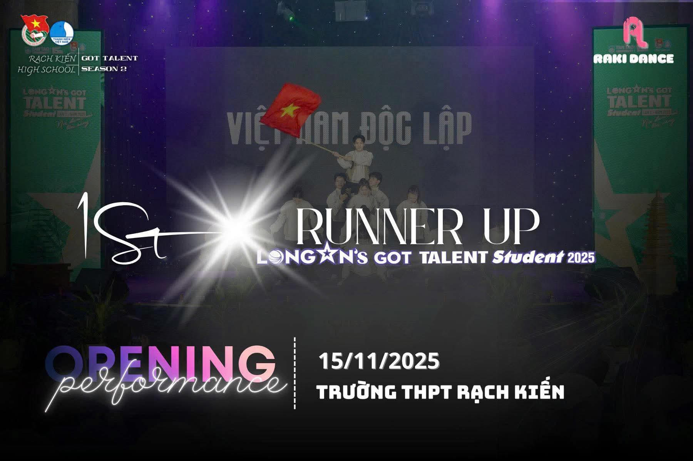
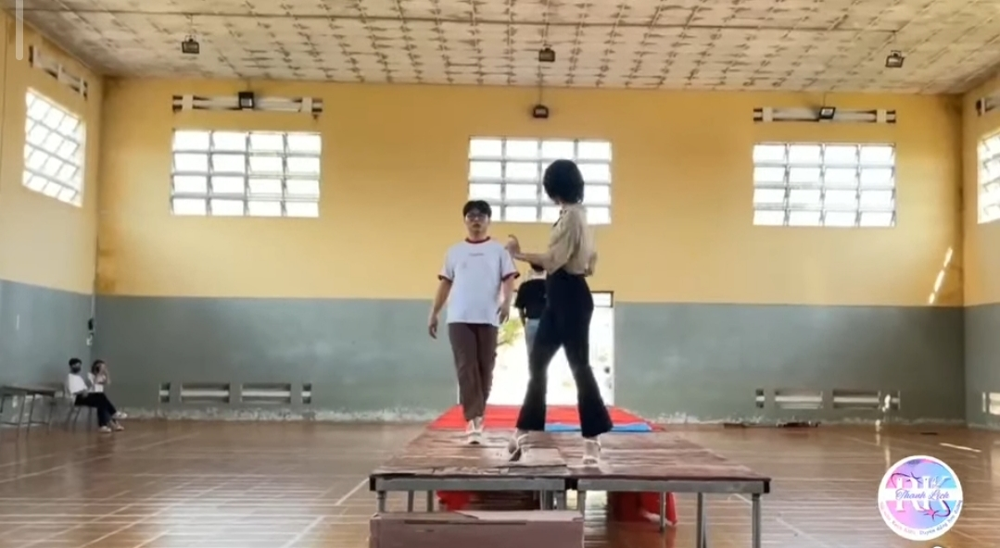

Hoạt động năng nổ và hiệu quả
Cháy hết mình trong các cuộc chơi
Giành những giải thưởng cao nhất
|  |  | |
CLB Âm NhạcCuộc thi “Thanh lịch Sắc màu Rạch Kiến” vừa diễn ra đã để lại nhiều ấn tượng sâu sắc trong lòng giáo viên và học sinh toàn trường. Đây là sân chơi ý nghĩa nhằm tôn vinh vẻ đẹp toàn diện của học sinh THPT Rạch Kiến, không chỉ ở hình thức bên ngoài mà còn ở tri thức, kỹ năng và phong thái ứng xử. Cuộc thi thu hút sự tham gia nhiệt tình của nhiều thí sinh đến từ các lớp, mang đến bầu không khí sôi nổi, trẻ trung và giàu cảm xúc. Trải qua các phần thi như trình diễn trang phục, ứng xử và thể hiện tài năng, các thí sinh đã cho thấy sự tự tin, bản lĩnh cùng nét duyên dáng riêng. Ban giám khảo làm việc công tâm, đánh giá dựa trên nhiều tiêu chí, đảm bảo lựa chọn được những gương mặt tiêu biểu nhất. Không khí cổ vũ nhiệt tình từ khán giả góp phần tạo nên thành công chung cho chương trình. “Thanh lịch-Sắc màu Rạch Kiến” không chỉ là cuộc thi tôn vinh cái đẹp mà còn là dịp để học sinh rèn luyện kỹ năng giao tiếp, thể hiện cá tính tích cực và lan tỏa hình ảnh học sinh Rạch Kiến năng động, văn minh, giàu bản sắc trong môi trường học đường hiện đại. |
||